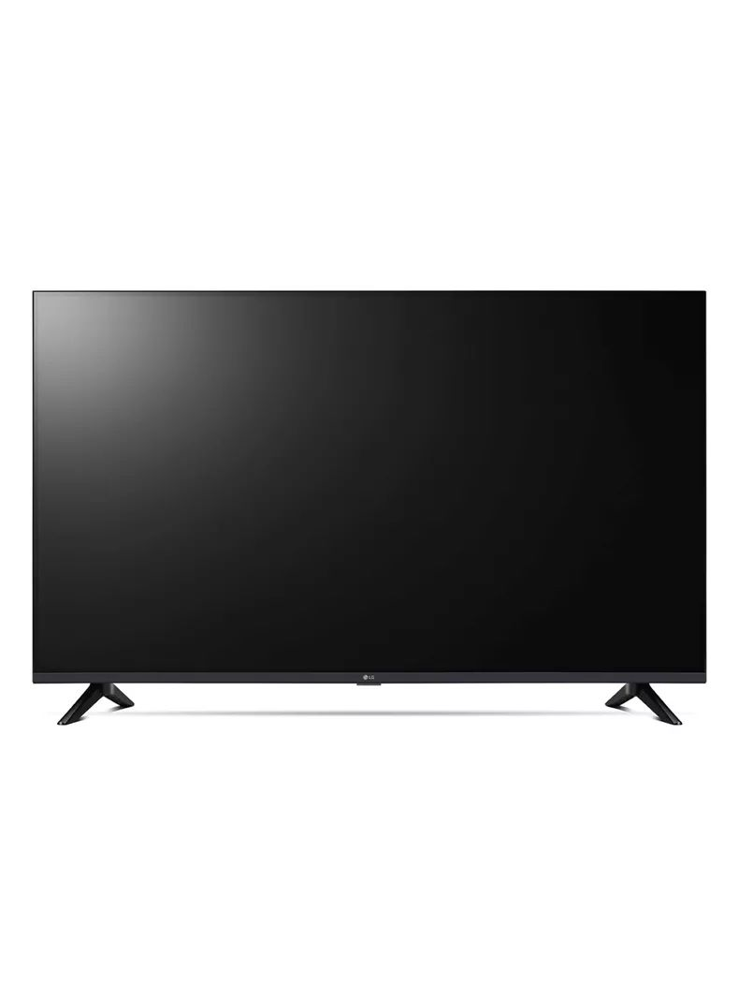
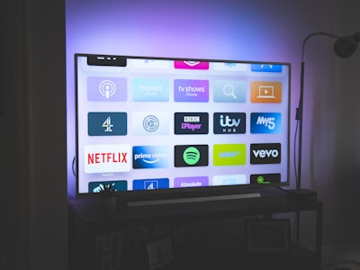
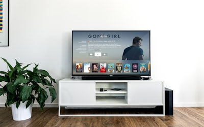

Куплю телевизор б/у в Ташкенте
Скупаем телевизоры б/у: LED, Smart TV, UHD 4K, OLED. Samsung, LG, Sony, Artel, Shivaki и другие марки. Покупаем ТВ от 32 до 75 дюймов. Приедем, проверим, заплатим сразу!
+998 99 111 23 23
Почему продают телевизоры нам
Платим дорого
Знаем рыночные цены на б/у телевизоры всех марок и диагоналей. Smart TV и 4K покупаем особенно дорого.
Выезд за 1-2 часа
Быстрый выезд в любой район Ташкента. Проверим телевизор на месте и заплатим сразу.
Любая диагональ
Покупаем телевизоры от 32 до 75 дюймов и больше. LED, QLED, OLED, Smart TV — любые технологии.
Бесплатный вывоз
Снимем со стены, аккуратно упакуем и увезём. Вся логистика бесплатна при скупке.
Какие телевизоры покупаем
Smart TV и 4K
Samsung, LG, Sony — Smart TV с 4K UHD, HDR. Диагонали от 43 до 75 дюймов. Покупаем дорого.

LED телевизоры
Artel, Shivaki, Haier, Hisense — LED телевизоры от 32 до 55 дюймов. Бюджетные и отечественные марки.

OLED и премиум
LG OLED, Samsung QLED, Sony Bravia XR — премиальные телевизоры покупаем по максимальным ценам.
Как продать телевизор
Позвоните
Назовите марку, диагональ и состояние ТВ. Мы скажем цену по телефону за 2 минуты.
Проверка
Приедем за 1-2 часа, проверим изображение и звук, согласуем окончательную цену.
Оплата
Заплатим сразу наличными или переводом. Аккуратно снимем и увезём телевизор.
Вопросы о скупке телевизоров
Сколько стоит б/у телевизор?
Зависит от марки, диагонали, технологии (LED/OLED/QLED) и состояния. Большие Smart TV Samsung и LG 4K от 55 дюймов ценятся выше. Позвоните — скажем цену за 2 минуты.
Покупаете телевизоры с дефектами?
Да, покупаем ТВ с полосами на экране, битыми пикселями, без пульта, с неработающим Smart TV — по сниженной цене. Звоните для оценки.
Снимете ли телевизор со стены?
Да, наши специалисты аккуратно снимут телевизор с кронштейна, упакуют и увезут. Всё бесплатно при скупке.
Какие телевизоры стоят дороже?
Дороже всего — Samsung QLED, LG OLED, Sony Bravia от 55 дюймов, возрастом до 3-5 лет. Smart TV с 4K/8K и HDR тоже ценятся высоко.
В каких районах Ташкента покупаете телевизоры?
Покупаем по всему Ташкенту: Чиланзар, Юнусабад, Мирзо Улугбек, Сергели, Мирабад, Алмазар, Учтепа, Яшнабад, Бектемир. Выезжаем в Чирчик и Алмалык.
Как срочно продать телевизор в Ташкенте?
Позвоните — назовём цену за 2 минуты. Приедем за 1-2 часа, проверим и заплатим наличными. Быстрее и выгоднее OLX.
Покупаете ли старые ЭЛТ-телевизоры?
Нет, ЭЛТ-телевизоры (кинескопные) не покупаем. Покупаем только плоские LED, Smart TV, 4K, OLED телевизоры.
Televizorni qancha narxda sotib olasiz?
Narx marka, diagonal, texnologiya va holatga bog'liq. Samsung, LG Smart TV 4K 55 dyuymdan qimmatroq. Qo'ng'iroq qiling — bepul baholash.
Где купить телевизор б/у в Ташкенте?
У нас можно купить телевизор б/у — LED, Smart TV, 4K, OLED. Samsung, LG, Sony, Artel от 32 до 75 дюймов. Все ТВ проверены и в рабочем состоянии. Доставка по Ташкенту бесплатно.
Можно ли купить телевизор бу с доставкой?
Да, доставляем бесплатно по всему Ташкенту. Позвоните +998 99 111 23 23 — расскажем что есть в наличии, пришлём фото. Привезём и подключим.
Куплю телевизор б/у в Ташкенте — скупка LED, Smart TV, 4K, OLED по всем районам: Чиланзар, Юнусабад, Сергели, Мирабад, Алмазар, Учтепа, Яшнабад. Продать телевизор Samsung, LG, Sony, Artel дорого. Бесплатный вывоз, оплата наличными.
Купить телевизор б/у в Ташкенте недорого — у нас большой выбор проверенных телевизоров: LED, Smart TV, 4K UHD, OLED. Купить телевизор бу Samsung, LG, Sony, Artel от 32 до 75 дюймов. Телевизор б/у купить можно с доставкой по Ташкенту — все ТВ проверены, работают, с гарантией состояния. Продать телевизор б/у тоже можно — звоните, оценим за 2 минуты.
Toshkentda ishlatilgan televizor sotib olish — LED, Smart TV, 4K. Samsung, LG, Sony televizorlarni qimmat sotib olamiz. Barcha tumanlar bo'ylab bepul chiqish, joyida naqd to'lov.
Продайте телевизор выгодно!
Позвоните — назовём цену за 2 минуты. Приедем, проверим, заплатим и заберём!
+998 99 111 23 23